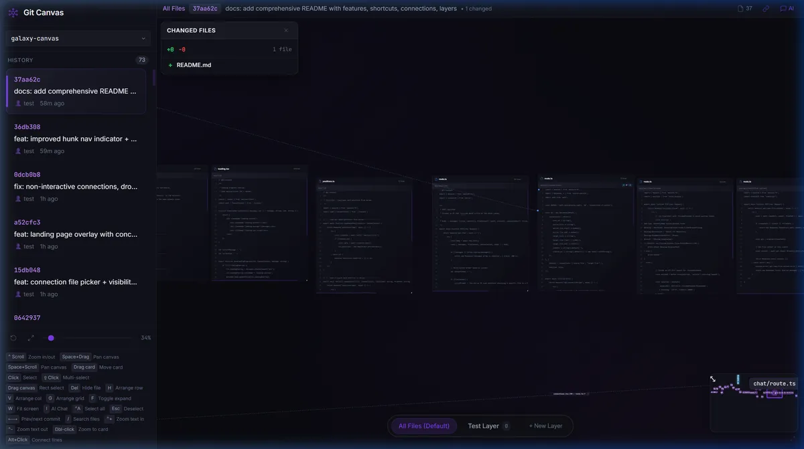
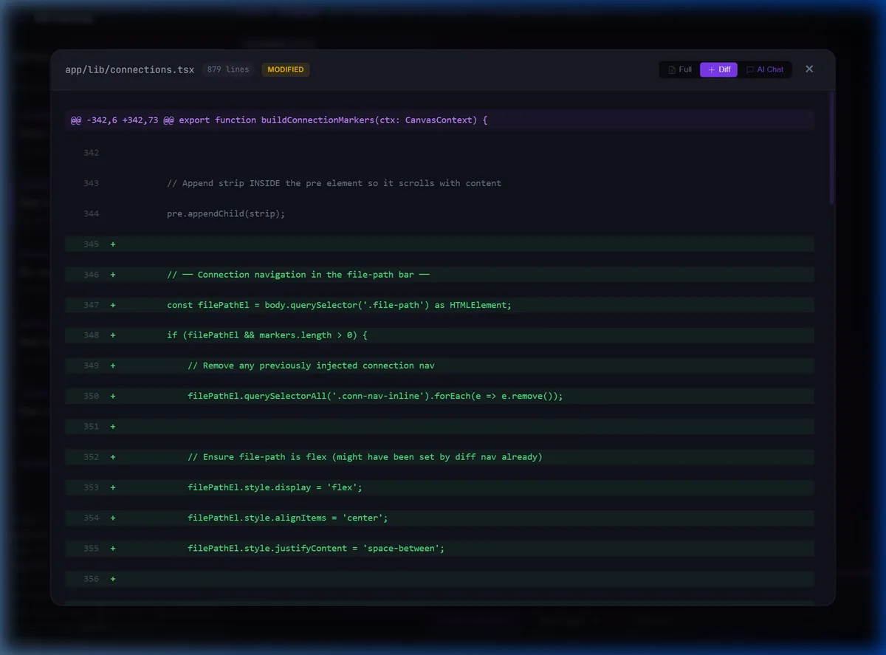

The universal formula for effective knowledge exploration.
From flat pages to infinite spatial canvases.
For 50 years, both your local filesystem and the internet share the same skeleton: a hierarchy of pages you scroll one-by-one. Books on shelves in a library. Same metaphor, same limitations.
Scroll top to bottom. One direction. Where everyone starts.
Files ↔ neighbors, folders ↕ hierarchy. Same structure for filesystem and the web.
A file can only live in one folder. A book on one shelf. One perspective, forever.
Every file becomes a media container on an infinite canvas. Arrange them the way you think. The minimap gives you context — see everything at a glance, jump to interact.

All files visible simultaneously — spatial arrangement for understanding
Hierarchies force one perspective. A file lives in one folder — forever. Layers give you N perspectives simultaneously. Each layer is a different projection of the same files. Switch instantly.
Files grouped by module boundaries and subsystem isolation.
Files arranged by import chains — who depends on whom.
Files sized by change frequency. Hotspots are obvious at a glance.
In WARMAPS: each country is a layer with maps, news, OSINT data.
Navigate through snapshots in time. In GitMaps, every Git commit is a frame. In WARMAPS, timeline ticks through events minute by minute.

Inline diffs show what changed between time frames
A single, domain-agnostic rendering engine that implements the five-dimensional formula. Feed it any knowledge domain — it gives you canvas, containers, minimap, layers, timeline, and connections.
Hardware-accelerated infinite pan & zoom with grid snapping.
Pluggable renderers for code, images, maps, interactive components.
Real-time bird's-eye view with click-to-jump navigation.
N projections of the same data — switch perspectives instantly.
Pluggable time sources — Git commits, interval ticks, event streams.
Line-level cross-references between any two containers.
Knowledge engineering for developers
Navigate your codebase spatially. Git commits become time-travel frames. Layers reveal different architectural perspectives of the same code. The minimap is your codebase-at-a-glance.
All files on one canvas. No more tabs. See everything, zoom to interact.
Arrow keys step through commits. Inline diffs show what changed.
Dependency view, module view, churn view — switch perspectives instantly.
Visible connections between related code — the links your IDE hides.
Real-time geopolitical intelligence
Not a finite globe — an infinite canvas. Each country is a layer with its own components: maps, news feeds, flight data, Telegram OSINT. Users resize and reorganize containers. Everything updates in real-time.
Not limited to a globe. Every data source is a spatial container.
23+ Telegram channels, GDELT, ACLED, news agencies — all as containers.
Review any moment. Troop movements, flights, headlines — rewound or fast-forwarded.
Each war, country, or conflict is a layer — a complete spatial dashboard.
A reward mechanism for our community of early believers and token holders.
Active holders are automatically entered into periodic draws. The longer you hold, the more entries you accumulate.
Exclusive access, early features, merch drops, and partner rewards distributed to our most engaged community members.
Contributors, testers, and active community participants earn bonus entries and recognition in the ecosystem.
Canvas + Containers + Minimap + Layers + Timeline + Connections